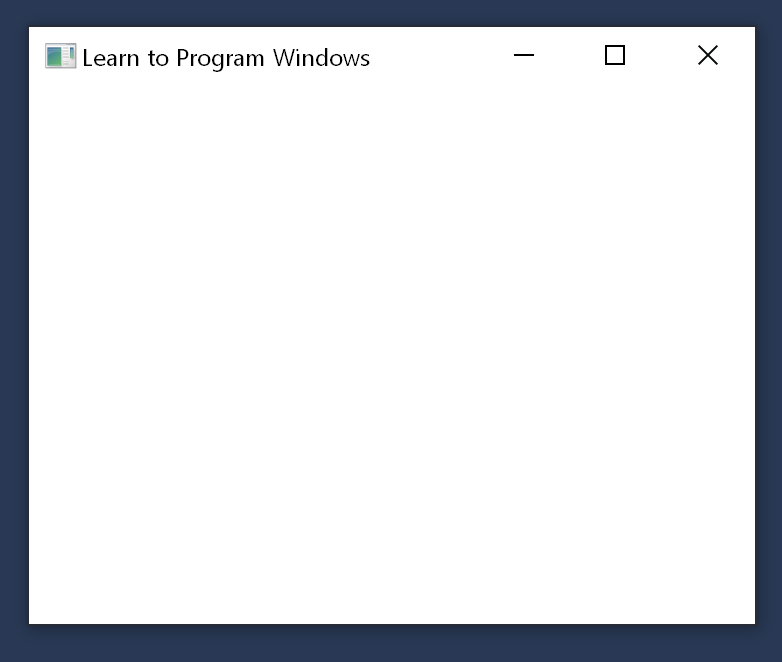

This sample application shows how to create a minimal Windows program.
The Windows Hello World sample application creates and shows an empty window, as shown in the screen shot that follows. This sample is discussed in Module 1. Your First Windows Program.

This sample is available here.
To download it, go to the root of the sample repo on GitHub (microsoft/Windows-classic-samples) and click the Clone or download button to download the zip file of all the samples to your computer. Then unzip the folder.
To open the sample in Visual Studio, select File / Open / Project/Solution, and navigate to the location you unzipped the folder and Windows-classic-samples-main / Samples / Win7Samples / begin / LearnWin32 / HelloWorld / cpp. Open the file HelloWorld.sln.
Once the sample has loaded, you will need to update it to work with Windows 10. From the Project menu in Visual Studio, select Properties. Update the Windows SDK Version to a Windows 10 SDK, such as 10.0.17763.0 or better. Then change Platform Toolset to Visual Studio 2017 or better. Now you can run the sample by pressing F5!